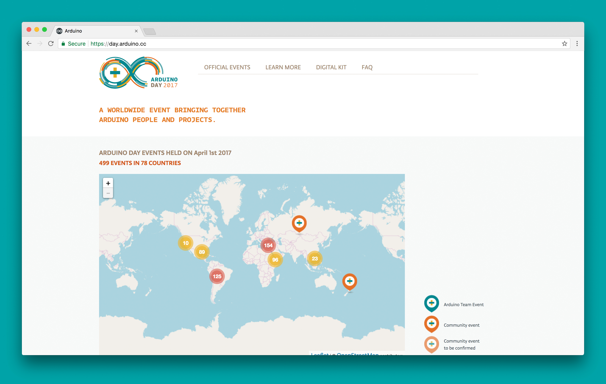

Stefania Mellai
Cos'è Arduino?
Hardware
Software
Community
Arduino e il Web
arduino.cc
- 
create.arduino.cc

Pallottole d'argento

“There is no single development, in either technology or management technique, which by itself promises even one order-of-magnitude improvement within a decade in productivity, in reliability, in simplicity.“
There is no royal road, but there is a road
- Sfruttare software già esistente
- Crescita organica dei progetti, disciplina nel mantenere il codice pulito
- Modularità / Riuso
Arduino Sass
- Collezione di mixin e placeholders SASS
- Include Bourbon
- Usato in oltre 10 siti in produzione
- Installabile con npm
- In continua evoluzione, versionato
Installazione
npm install --save git+ssh://git@github.com/bcmi-labs/sass.git#x.x.x
Utilizzo
Import di variabili:
Import mixin singolo:
@import 'node_modules/arduino-sass/src/variables';
@import 'node_modules/arduino-sass/src/buttons';
Import completo:
@import 'node_modules/arduino-sass/src/arduino-sass';
Variabili
$teal5: #005c5f;
$typonine-mono-regular: 'Typonine Mono Regular', 'Lucida Grande', Lucida, Verdana, sans-serif;
.demo-text {
color: $teal5;
font-family: $typonine-mono-regular;
}
"A good programmer is someone who always looks both ways before crossing a one-way street." - Doug Linder
Mixin
Usati per elementi configurabili
- button
- spinner
- toggle
- ...
@mixin spinner($color, $background, $size, $border: $size / 6, $duration: 2s) {
@include size($size - 2 * $border);
box-shadow: inset 0 0 0 $size / 12;
color: $background;
font-size: 6px;
margin: $border;
...
@include spinner($orange, $teal0, 100px);
@include spinner($orange, $sunflower, 100px);
Placeholder
Usati per elementi non configurabili
- checkbox
- radio button
- sidebar
- pagination
- ...
%ardu-pagination {
$separator-color: rgba($teal1, .25);
display: flex;
flex-wrap: wrap;
justify-content: center;
list-style: none;
margin: 30px 0 0;
padding: 0;
.move-page {
flex-grow: 1;
...
.demo-pagination {
@extend %ardu-pagination;
}
.notification, .success_notification, .error_notification {
border-radius: 2px;
color: $white;
font-family: $typonine-sans-regular;
font-size: 16px;
...
}
.success_notification {
background-color: $notifysuccess;
}
.error_notification {
background-color: $notifyerror;
}
Placeholder
.success_notification {
border-radius: 2px;
color: $white;
font-family: $typonine-sans-regular;
font-size: 16px;
...
background-color: $notifysuccess;
}
.error_notification {
border-radius: 2px;
color: $white;
font-family: $typonine-sans-regular;
font-size: 16px;
...
background-color: $notifyerror;
}
Mixin
Browser supportati
Dati ultimo anno
Tutti
Internet Explorer
Sviluppi Futuri
- Integrazione nuovi moduli
-
Sito Web interno con
guida ed esempi

Ringraziamenti
Le pene dello sviluppatore
(by Brooks)
- Tendere alla perfezione è la parte più difficile di imparare a programmare
- Gli obiettivi vengono definiti da terzi e spesso dipendiamo da cose (soprattutto programmi) che non possiamo controllare
- Ogni lavoro creativo porta con sé ore noiose di duro lavoro; programmare non fa eccezione
- Il software è perennemente a rischio obsolescenza, ancora prima di essere completato
Le gioie dello sviluppatore
(by Brooks)
- Il piacere di costruire qualcosa
- Il piacere di fare qualcosa di utile per altri (a volte, NDR)
- Il fascino di modellare qualcosa simile ad un rompicapo, fatto di pezzi mobili interconnessi
- La gioia di imparare sempre qualcosa di nuovo, attraverso un lavoro non ripetitivo
- La delizia di lavorare in un mezzo di puro pensiero, che esiste, lavora e si muove in un modo che non è proprio degli oggetti materiali